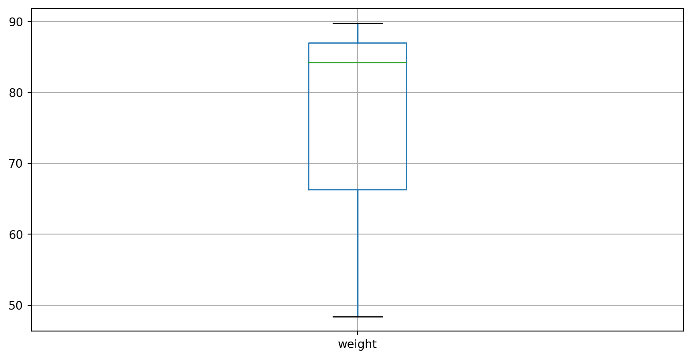
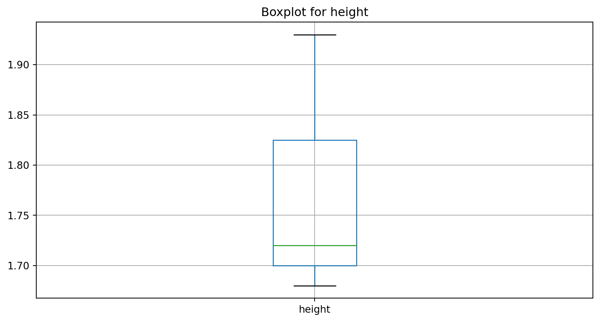
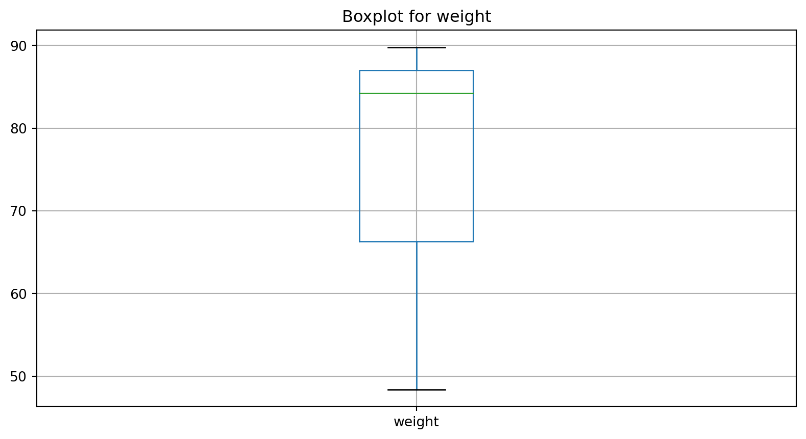

Pandas
Slides for Lab Pandas-Introduction
Pandas introduction
Import pandas
To load the pandas package and start working with it, import the package.
The community agreed alias for pandas is
pd
Create and Import Data
Data creation
- To manually store data in a table, create a DataFrame:
Show data
| name | height | weight | id | city | |
|---|---|---|---|---|---|
| 0 | Tom | 1.68 | 48.4 | 1 | Stuttgart |
| 1 | Lisa | 1.93 | 89.8 | 2 | Stuttgart |
| 2 | Peter | 1.72 | 84.2 | 3 | Berlin |
Import data
- Import data with the prefix
.read_*

Import data
- Import a CSV file in a GitHub repo
| age | city | income | membership_days | campaign_engagement | target | |
|---|---|---|---|---|---|---|
| 0 | 56 | Berlin | 136748 | 837 | 3 | 1 |
| 1 | 46 | Stuttgart | 25287 | 615 | 8 | 0 |
| 2 | 32 | Berlin | 146593 | 2100 | 3 | 0 |
| 3 | 60 | Berlin | 54387 | 2544 | 0 | 0 |
| 4 | 25 | Berlin | 28512 | 138 | 6 | 0 |
Store data
- Store data with the prefix
.to_*
Viewing data
Overview
| name | height | weight | id | city | |
|---|---|---|---|---|---|
| 0 | Tom | 1.68 | 48.4 | 1 | Stuttgart |
| 1 | Lisa | 1.93 | 89.8 | 2 | Stuttgart |
| 2 | Peter | 1.72 | 84.2 | 3 | Berlin |
Head and tail
| name | height | weight | id | city | |
|---|---|---|---|---|---|
| 0 | Tom | 1.68 | 48.4 | 1 | Stuttgart |
| 1 | Lisa | 1.93 | 89.8 | 2 | Stuttgart |
Info
- The
info()method prints information about a DataFrame.
<class 'pandas.core.frame.DataFrame'>
RangeIndex: 3 entries, 0 to 2
Data columns (total 5 columns):
# Column Non-Null Count Dtype
--- ------ -------------- -----
0 name 3 non-null object
1 height 3 non-null float64
2 weight 3 non-null float64
3 id 3 non-null int64
4 city 3 non-null object
dtypes: float64(2), int64(1), object(2)
memory usage: 252.0+ bytesColumn names
Index(['name', 'height', 'weight', 'id', 'city'], dtype='object')Data type
- Show data types (dtypes).
name object
height float64
weight float64
id int64
city object
dtype: object- The data types in this DataFrame are integers (int64), floats (float64) and strings (object).
Index
RangeIndex(start=0, stop=3, step=1)Change column names
Column names
Usually, we prefer to work with columns that have the following proporties:
no leading or trailing whitespace (
"name"instead of" name "," name"or"name ")all lowercase (
"name"instead of"Name")no white spaces (
"my_name"instead of"my name")
Simple rename
- First, we rename columns by simply using a mapping
- We rename
"name"to" MY NEW-NAME"(note that we include a leading whitespace)
Simple rename
| MY NEW-NAME | height | weight | id | city | |
|---|---|---|---|---|---|
| 0 | Tom | 1.68 | 48.4 | 1 | Stuttgart |
| 1 | Lisa | 1.93 | 89.8 | 2 | Stuttgart |
| 2 | Peter | 1.72 | 84.2 | 3 | Berlin |
Trailing and leading spaces (with regex)
We use regular expressions to deal with whitespaces
To change multiple column names in
dfat once, we use the methoddf.columns = df.columns.str.replace()To replace the spaces, we use
.replace()withregex=True
Regular expressions
Explanation for regex (see also Stackoverflow):
- we start with
r(for raw) which tells Python to treat all following input as raw text (without interpreting it) - “
^”: is line start - ” “: is a white space
- “
+”: some following characters - “
|”: is or - “
$”: is line end - ““: is an empty string
Regular expressions
To learn more about regular expressions (“regex”), visit the following sites:
Trailing and leading spaces (with regex)
- In the following function, we search for leading spaces and replace them with an empty string:
Replace special characters
Again, we use regular expressions to deal with special characters (like
-,%,&,$etc.)Replace “
-” with “_”
Lowercase and whitespace
We can use two simple methods to convert all columns to lowercase and replace white spaces with underscores (“_“):
.str.lower().str.replace(' ', '_')
Data Types
Data
Data Types
name object
height float64
weight float64
id int64
city object
dtype: objectData Types
<class 'pandas.core.frame.DataFrame'>
RangeIndex: 3 entries, 0 to 2
Data columns (total 5 columns):
# Column Non-Null Count Dtype
--- ------ -------------- -----
0 name 3 non-null object
1 height 3 non-null float64
2 weight 3 non-null float64
3 id 3 non-null int64
4 city 3 non-null object
dtypes: float64(2), int64(1), object(2)
memory usage: 252.0+ bytesChange data type
There are several methods to change data types in pandas:
The most common method to change the data type is:
.astype(): Convert to a specific type (like “int32”, “float” or “catgeory”).astype(str): Convert to string
Change data type
More options:
to_datetime: Convert argument to datetime.to_timedelta: Convert argument to timedelta.to_numeric: Convert argument to a numeric type.
Categorical data
Categoricals are a pandas data type corresponding to categorical variables in statistics.
A categorical variable takes on a limited, and usually fixed, number of possible values (categories).
Examples are gender, social class, blood type, country affiliation, observation time or rating via Likert scales.
Categorical data
- Convert variable “name” to a category dtype:
Change data type
<class 'pandas.core.frame.DataFrame'>
RangeIndex: 3 entries, 0 to 2
Data columns (total 5 columns):
# Column Non-Null Count Dtype
--- ------ -------------- -----
0 name 3 non-null category
1 height 3 non-null float64
2 weight 3 non-null float64
3 id 3 non-null int64
4 city 3 non-null object
dtypes: category(1), float64(2), int64(1), object(1)
memory usage: 363.0+ bytesString data
In our example,
idis not a number (we can’t perform calculations with it)It is just a unique identifier so we should transform it to a simple string (object)
Change data type
<class 'pandas.core.frame.DataFrame'>
RangeIndex: 3 entries, 0 to 2
Data columns (total 5 columns):
# Column Non-Null Count Dtype
--- ------ -------------- -----
0 name 3 non-null category
1 height 3 non-null float64
2 weight 3 non-null float64
3 id 3 non-null object
4 city 3 non-null object
dtypes: category(1), float64(2), object(2)
memory usage: 363.0+ bytesAdd new columns
Constant
Add a new variable called “number” to df
The new variable should have the number 42 in all rows
From existing columns
- Create new columns from existing columns
Dates
- To add a date, we can use datetime and strftime (see code examples on the next slides):
Dates
| Code | Example | Description |
|---|---|---|
| %a | Sun | Weekday as locale’s abbreviated name. |
| %A | Sunday | Weekday as locale’s full name. |
| %w | 0 | Weekday as a decimal number, where 0 is Sunday and 6 is Saturday. |
| %d | 8 | Day of the month as a zero-padded decimal number. |
| %-d | 8 | Day of the month as a decimal number. (Platform specific) |
Dates
| Code | Example | Description |
|---|
%B | September | Month as locale’s full name. |
%m | 9 | Month as a zero-padded decimal number. |
%-m | 9 | Month as a decimal number. (Platform specific) |
Dates
| Code | Example | Description |
|---|
%Y | 2013 | Year with century as a decimal number. |
%H | 7 | Hour (24-hour clock) as a zero-padded decimal number. |
%-H | 7 | Hour (24-hour clock) as a decimal number. (Platform specific) |
%I | 7 | Hour (12-hour clock) as a zero-padded decimal number. |
%-I | 7 | Hour (12-hour clock) as a decimal number. (Platform specific) |
Dates
| Code | Example | Description |
|---|
%M | 6 | Minute as a zero-padded decimal number. |
%-M | 6 | Minute as a decimal number. (Platform specific) |
%S | 5 | Second as a zero-padded decimal number. |
%-S | 5 | Second as a decimal number. (Platform specific) |
%f | 0 | Microsecond as a decimal number, zero-padded on the left. |
%z | 0 | UTC offset in the form ±HHMM[SS[.ffffff]] (empty string if the object is naive). |
%Z | UTC | Time zone name (empty string if the object is naive). |
%j | 251 | Day of the year as a zero-padded decimal number. |
%-j | 251 | Day of the year as a decimal number. (Platform specific) |
%U | 36 | Week number of the year (Sunday as the first day of the week) as a zero padded decimal number. All days in a new year preceding the first Sunday are considered to be in week 0. |
%W | 35 | Week number of the year (Monday as the first day of the week) as a decimal number. All days in a new year preceding the first Monday are considered to be in week 0. |
%c | Sun Sep 8 07:06:05 2013 | Locale’s appropriate date and time representation. |
%x | 09.08.13 | Locale’s appropriate date representation. |
%X | 07:06:05 | Locale’s appropriate time representation. |
%% | % | A literal ‘%’ character. |
Statistics
Numeric data
- We can calculate simple statistics like mean, median, standard deviation etc.
Numeric data
- Print the value in nice format (using formatted string literals f”…“)
Numeric data
1.72Describe
- describe() shows a quick statistic summary of your numerical data.
| height | weight | number | bmi | |
|---|---|---|---|---|
| count | 3.000000 | 3.000000 | 3.0 | 3.000000 |
| mean | 1.776667 | 74.133333 | 42.0 | 23.240000 |
| std | 0.134288 | 22.460929 | 0.0 | 5.704972 |
| min | 1.680000 | 48.400000 | 42.0 | 17.150000 |
| 25% | 1.700000 | 66.300000 | 42.0 | 20.630000 |
| 50% | 1.720000 | 84.200000 | 42.0 | 24.110000 |
| 75% | 1.825000 | 87.000000 | 42.0 | 26.285000 |
| max | 1.930000 | 89.800000 | 42.0 | 28.460000 |
Describe
| count | mean | std | min | 25% | 50% | 75% | max | |
|---|---|---|---|---|---|---|---|---|
| height | 3.0 | 1.78 | 0.13 | 1.68 | 1.70 | 1.72 | 1.82 | 1.93 |
| weight | 3.0 | 74.13 | 22.46 | 48.40 | 66.30 | 84.20 | 87.00 | 89.80 |
| number | 3.0 | 42.00 | 0.00 | 42.00 | 42.00 | 42.00 | 42.00 | 42.00 |
| bmi | 3.0 | 23.24 | 5.70 | 17.15 | 20.63 | 24.11 | 26.28 | 28.46 |
Describe
- Summary statistics for numeric variables
heightandbmifor different levels of the categorical variablecity:
Categorical data
- we can also use
describe()for categorical data
Categorical data
- Show unique levels of a categorical variable and count with
value_counts()
Categorical data
- We also can extract specific values
2Categorical data
- Print the value in nice format (using formatted string literals f”…“)
Loop over list
- Example of for loop to obtain statistics for specific numerical columns
Loop over list
- Calculate summary statistics for our list.
Column: height
count 3.00
mean 1.78
std 0.13
min 1.68
25% 1.70
50% 1.72
75% 1.82
max 1.93
Name: height, dtype: float64
Column: weight
count 3.00
mean 74.13
std 22.46
min 48.40
25% 66.30
50% 84.20
75% 87.00
max 89.80
Name: weight, dtype: float64
Create plots
Boxplot

Boxplots with for loop


Selection with [], loc and iloc
Getting columns with [[]]
Selecting a single column with
[[]]:Select the column
cityand save it as a new Pandas dataframedf_city
Selecting rows with []
- Selecting via
[]slices the rows (endpoint is not included) and includes all columns:
| name | height | weight | id | city | number | bmi | date | |
|---|---|---|---|---|---|---|---|---|
| 0 | Tom | 1.68 | 48.4 | 1 | Stuttgart | 42 | 17.15 | 2023-08-19 |
| 1 | Lisa | 1.93 | 89.8 | 2 | Stuttgart | 42 | 24.11 | 2023-08-19 |
Getting a cross section
The
.loc(location) attribute is the primary access method.For getting a cross section using a label (select row 0):
Selecting on a multi-axis by label
- Only select location at row 0 for column “name”
By label .loc
- Select row 2 to 4 for column “name” (when using .loc endpoints are included)
By label .loc
- Select row 2 to 4 for columns “name” and “height” (when using .loc endpoints are included)
By label .loc
- Select all rows for name and height
By label .loc
- For getting a scalar value:
By position .iloc
Pandas provides a suite of methods in order to get purely integer based indexing.
Here, the
.ilocattribute is the primary access method.
By integer slices
- When using
.iloc, endpoints are not included.
By lists of integer position locations
| name | height | |
|---|---|---|
| 0 | Tom | 1.68 |
| 2 | Peter | 1.72 |
For slicing rows explicitly
| name | height | weight | id | city | number | bmi | date | |
|---|---|---|---|---|---|---|---|---|
| 1 | Lisa | 1.93 | 89.8 | 2 | Stuttgart | 42 | 24.11 | 2023-08-19 |
| 2 | Peter | 1.72 | 84.2 | 3 | Berlin | 42 | 28.46 | 2023-08-19 |
For slicing columns explicitly
| height | weight | |
|---|---|---|
| 0 | 1.68 | 48.4 |
| 1 | 1.93 | 89.8 |
| 2 | 1.72 | 84.2 |
For getting a value explicitly
Filter
Filter
- Using a single column’s values to filter data (boolean indexing).
Filter on multiple conditions
- Combine filtering for two columns or more with
&(and)
Filter on multiple conditions
- You can also combine filtering for two columns or more with
|(or)
isin()
- Always use the isin() method if you have multiple conditions within one column:
Grouping
Grouping
By “group by” we are referring to a process involving one or more of the following steps:
Splitting the data into groups based on some criteria
Applying a function to each group independently
Combining the results into a data structure
Grouping
- Grouping and then applying the
mean()function to the resulting groups. Furthermore, we round the results and transpose the data.
Segment data into bins
Segment data into bins
Use the function cut when you need to segment and sort data values into bins.
This function is also useful for going from a continuous variable to a categorical variable.
Segment data into bins
The standard weight status categories associated with BMI ranges for adults are shown in the following table:
| BMI | Weight Status |
|---|---|
| Below 18.5 | Underweight |
| 18.5 - 24.9 | Normal or Healthy Weight |
| 25.0 - 29.9 | Overweight |
| 30.0 and Above | Obese |
Segment data into bins
In our function, we discretize the variable
bmiinto four bins according to the table above:The bins [0, 18.5, 25, 30, float(‘inf’)] indicate (0,18.5], (18.5,25], (25,30], (30, float(’inf))
float('inf')is used for setting variable with an infinitely large value
Segment data into bins
Segment data into bins
Segment data into bins
- Example of how to discretize into four equal-sized bins:
Segment data into bins
Example of how to discretize into four equal-sized bins if you don’t need labels